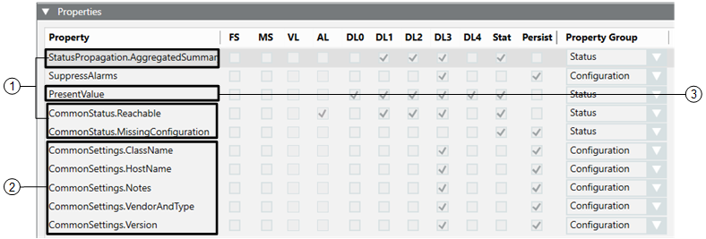

Define the Properties Settings of the SNMP Object Models
Repeat this procedure for each DPT object model that was added to the Object Model folder of the SNMP library.
- In System Browser, select Project > System Settings > Libraries > L4-Project or L3-Country or L2-Region > Global > SNMP >Object Model > [SNMP object model].
- Select the Models & Functions tab.
- Open the Properties expander. Here you must specify the attributes for each individual DPE (property) belonging to this DPT (object).
- For each property in the list, use the check boxes and drop-down list to enter its settings. Refer to the tables below for an explanation of each setting.
- Click Save
 .
.

The properties of a DPT are grouped as follows.
| Description |
1 | CommonStatus Mandatory properties required for Desigo CC SNMP components to work correctly. They are the result of the import of the line *;CommonStatus;Ref;_GmsSNMP_CommonStatus; |
2 | CommonSettings Mandatory properties required for Desigo CC SNMP components to work correctly. They are the result of the import of the line *;CommonSettings;Ref;_GmsSNMP_CommonSettings; defined in the CSV file. |
3 | SNMP Properties Properties explicitly defined for the SNMP points to read from the SNMP device. Each property represents an SNMP point and the corresponding variable type. |

The configuration of the properties attributes, especially for the mandatory DPEs, presented in the previous figure, is optimal for each SNMP device to integrate. When configuring a new object model, we suggest copying the settings from the SNMP object model provided for the Global library in the L1-Headquarter library level (make a screenshot and copy from the image).
Even though you can freely define the SNMP properties attributes, the configuration presented in the previous figure can be considered consistent and working with the majority of the SNMP object models.
Setting | Description |
FS | Indicates that the property has a Field System alarm configured. A Field System alarm is an event arriving from the field. This means that it is generated by a supported control unit or field device where the driver is in charge of generating this kind of alarms generally based on specific alarm tables. |
MS | Indicates that the property has a Management Station alarm configured. A Management Station alarm is an event internally triggered by the management station (and not generated by a driver that has an alarm table associated). SNMP uses Management Station alarm types. |
VL | Indicates that the property is logged in the Value Log (Event) of the History Database. The Value Log is the database that collects any information relevant to value changes for trending (for example, temperature value for an Analog Input Temperature Sensor). |
AL | Indicates that the property is logged in the Activity Log of the History Database. The Activity Log is the database that collects any information relevant to the operators' activity or system activity (for example, alarm handling, acknowledged alarms, and so on). |
DL0 | If set, the property is visible in configuration mode (System Manager in Engineering mode). |
DL1 | If set, the property is visible in the Status and Commands window available for graphic objects. |
DL2 | If set, the property is visible in the Operation tab (in the Contextual pane). |
DL3 | If set, the property is visible in the Extended Operation tab (in the Contextual pane). |
DL4 | if set, the property is exposed to the OPC server interface and other northbound interfaces in future that will make use of this setting. |
Stat | If set, it enables the configuration of the Status option: you can define whether the specific property is only visible when it is different from the (configured) normal status. If associated to DL1, it displays the property in a bubble widget. |
Persist | If set, the value of the property is saved in case Desigo CC is stopped and restarted. Basically, this option is set for the configuration of properties when they must be already valorized at system start-up (for example, the IP address of a control unit to connect). NOTE: Typically, the properties required for SNMP must be updated during system operation; therefore this option must not be set. |
Property Group | Used to assign a property to a specific group for which you can configure different access levels and visibility in the Security configuration. |